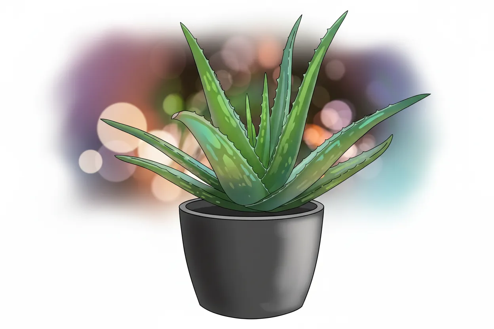
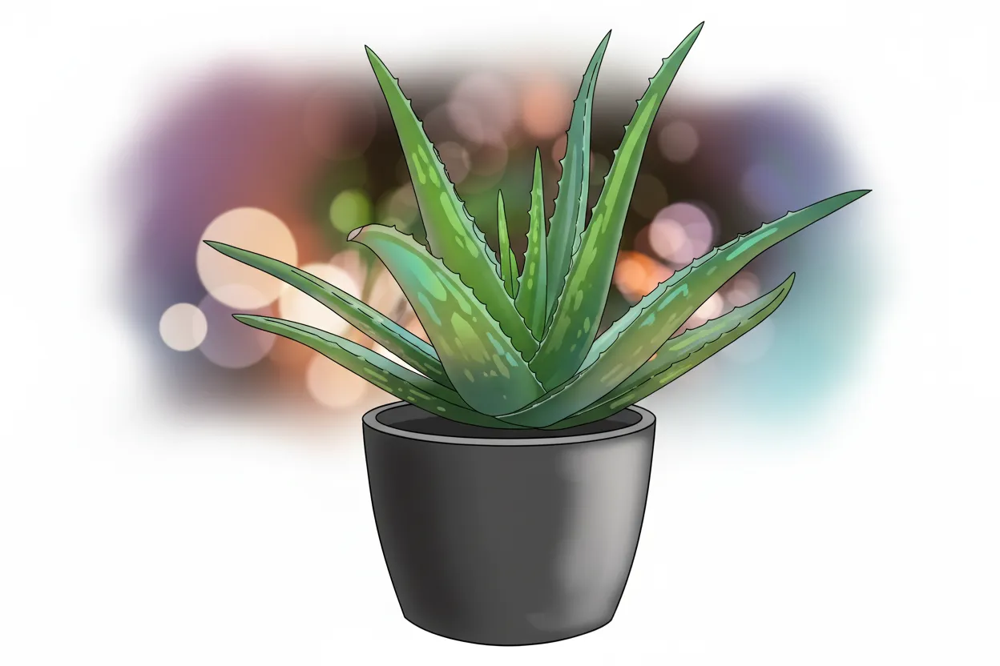

Aloe vera

 



Lai Nótië
| Scientific | Aloe vera |
| Lómissë | Livingroom window |
| Cala | Ú-dír |
| Pot | potPlastic |
| Drainage | Ú-dír |
Lemnar Órë
| Tarma | Ento | Enwë |
|---|---|---|
| Sirya | ||
| Yána | - | |
| Potya | ||
| Hórë | - | |
| Anta | - | |
| Mista | - | - |
| Scientific | Aloe vera |
| Lómissë | Livingroom window |
| Cala | Ú-dír |
| Pot | potPlastic |
| Drainage | Ú-dír |
| Tarma | Ento | Enwë |
|---|---|---|
| Sirya | ||
| Yána | - | |
| Potya | ||
| Hórë | - | |
| Anta | - | |
| Mista | - | - |